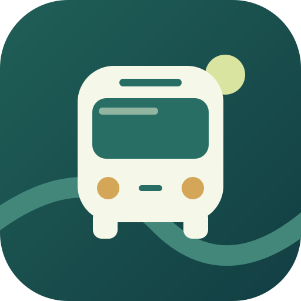

정류소 목록으로 건너뛰기

진주 버스
JINJU BUS
↗ ZERIONA로 돌아가기
타는 방향부터, 내릴 정류소까지
지금 어느 정류소에
있을까요?
전체 정류소에서 버스가 있는 곳과 다음 정류소를 확인하세요.
준비 중
15초 간격으로 현재 정류소 조회
↻
도착 알림
확인
등록한 버스
0
이 기기에 저장
등록할 버스번호
+ 등록
전체 정류소
도착 알림 설정
BUS STOPS
전체 정류소
조회 대기
진행 방향
버스를 등록해 주세요
↓ 이 순서로 진행합니다
● 현재 조회 정류소